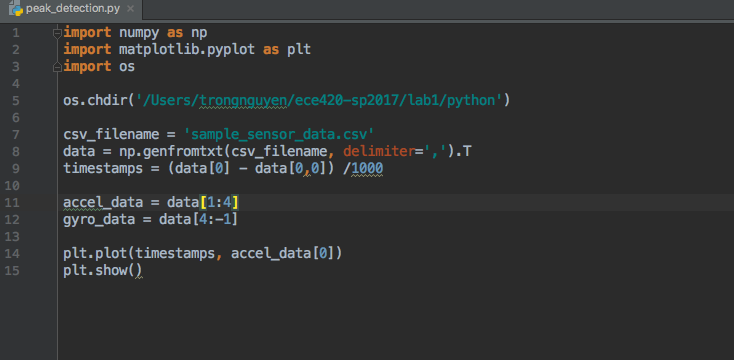
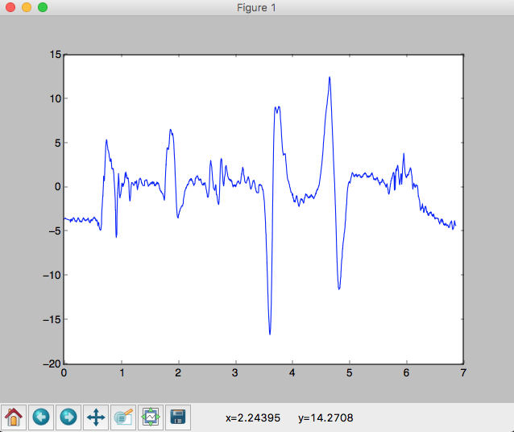
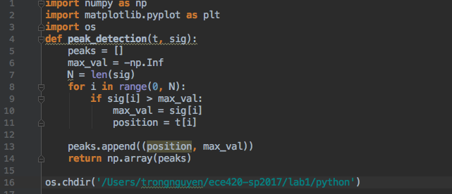
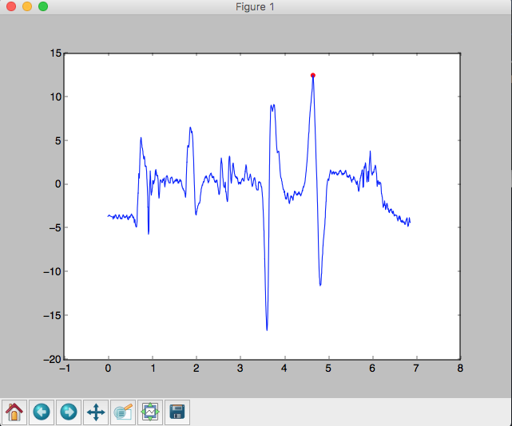
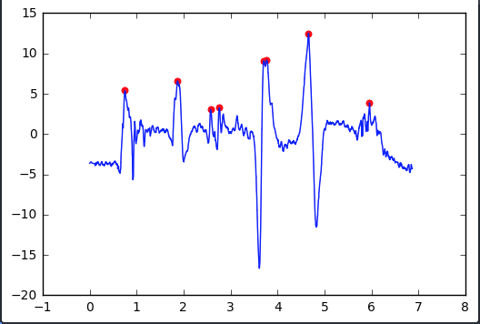

Lab 1 - IMU Pedometer
For this course, PyCharm will be our Python IDE.
Set up Python Interpreter.
-
Open PyCharm.
-
Go to PyCharm Preferences
-
Go to Project:python -> Project Interpreter. Nagvigate to /anaconda/bin/python on Mac or "C:\Users\Jane Smith\anaconda\bin\python" on Windows.
-
Click OK
Create a new Project
-
Go to File -> New Project
-
Choose a Pure Python project. Make sure the Interpreter is set correctly.
-
Name the project lab 1. Click OK.
-
Right click the lab1 Navigation bar.
-
Choose New -> Python File. Name it peak_detection.
Plot the sensor data
Copy the "sample_sensor_data.csv" to the lab1 folder.
In the file peak_detection.py, type the following:

We imported needed library (numpy, matplotlib and os) from line 1 to 3. Change the running directory in line 5 to where you store the sample_sensor_data.csv file.
The accelerometer and gyroscope data are read in line 11 and 12. Let's plot the first axis of accelerometer data in line 14.
Run the python code
Right click anywhere inside the code page and choose Run 'peak_detection'.
Close the figure to stop the program from running.

Debug your code
Click on the space between the code the the line number on line 14. A break point (red cirle) should show up.

Right click inside the peak_detection.py or click on the Debug button on the top right corner of PyCharm. (It has the Bug symbol)
In the Debug console, you can view all the variables currently created. If it is a numpy array, you can choose View as Array (at the end of the variable.)

Debug in the IPython Console
Switch to the Console tab and choose Show Python Prompt.

This is the python interactive console which is connected to your debugger.
Let's find the maximum of the accelerometer data.
Type accel_data[0].max() in the console and press enter.
It should give you 12.507.
Define your function
Now let's define a function to find the peak in your signal. Go to the top of the function and define the function peak_detection on line 4.

We define a list of peaks on line 5. For now we detect only one peak, the maximum value of our signal. We use a for loop to traverse through the our array sig. Initially, the max_val is set to minus infinity. Every time we encounter a greater value than max_val, we record this value and its position. Python relies on tab spacing to realize different part of the code.
In line 14, we turn our list to numpy array for plotting.
Now that we define our function, we can call it and plot our peak. Add this line of code after the plot function.
plt.scatter(max_peaks[:,0], max_peaks[:,1], color = 'red')
Now run or debug your program. You should see your red peak overlaid onto the signal.

Assignment
Modify the peak_detection function to detect other peaks. It should accept another input parameter thresh. A peak should have value greater than thresh.
Rename your python file to firstname_lastName.py when you submit it.
Here is a sample output:
